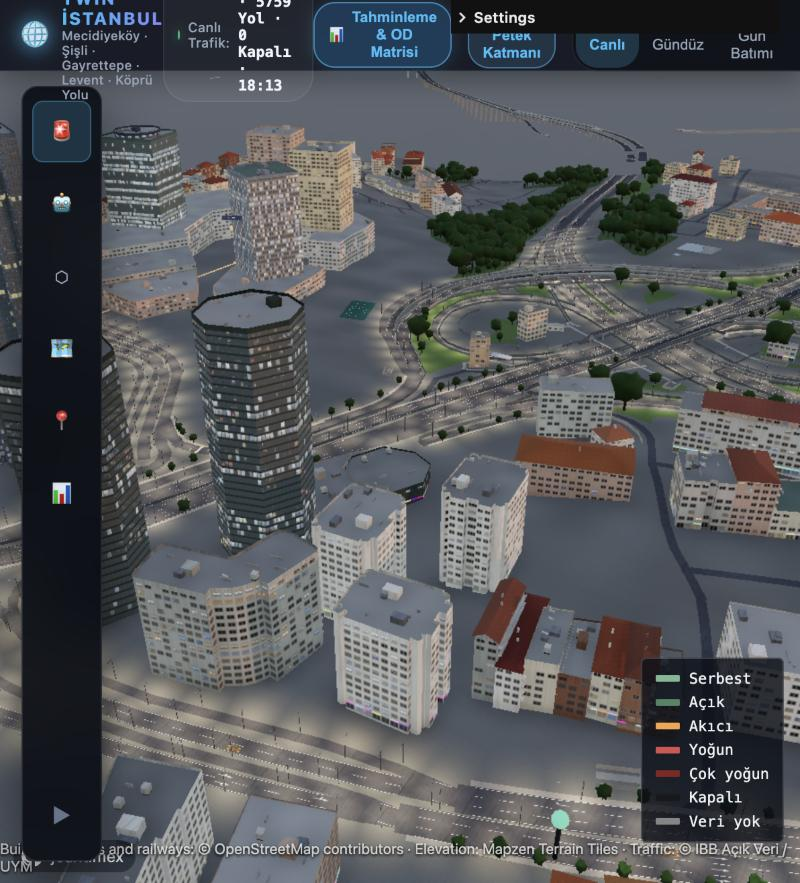
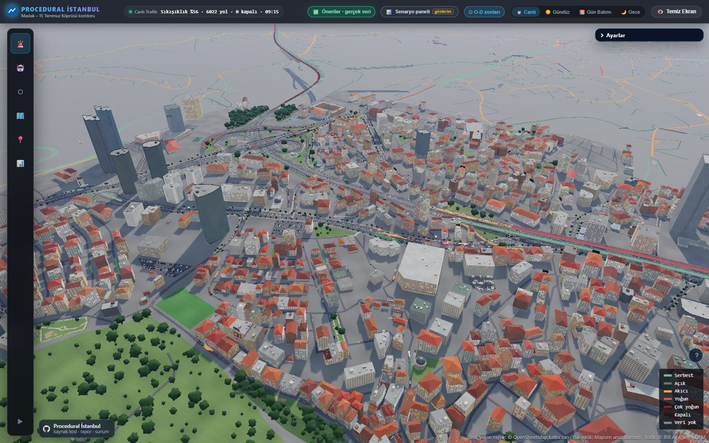
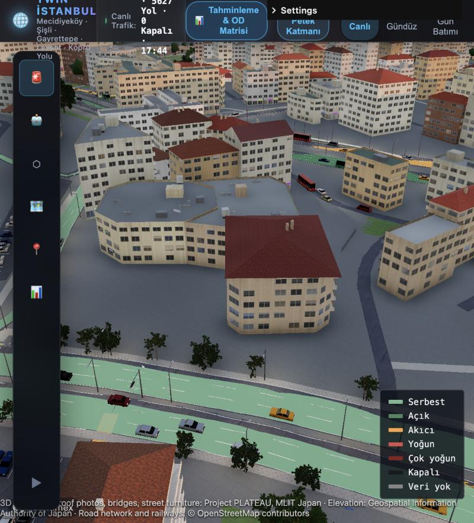
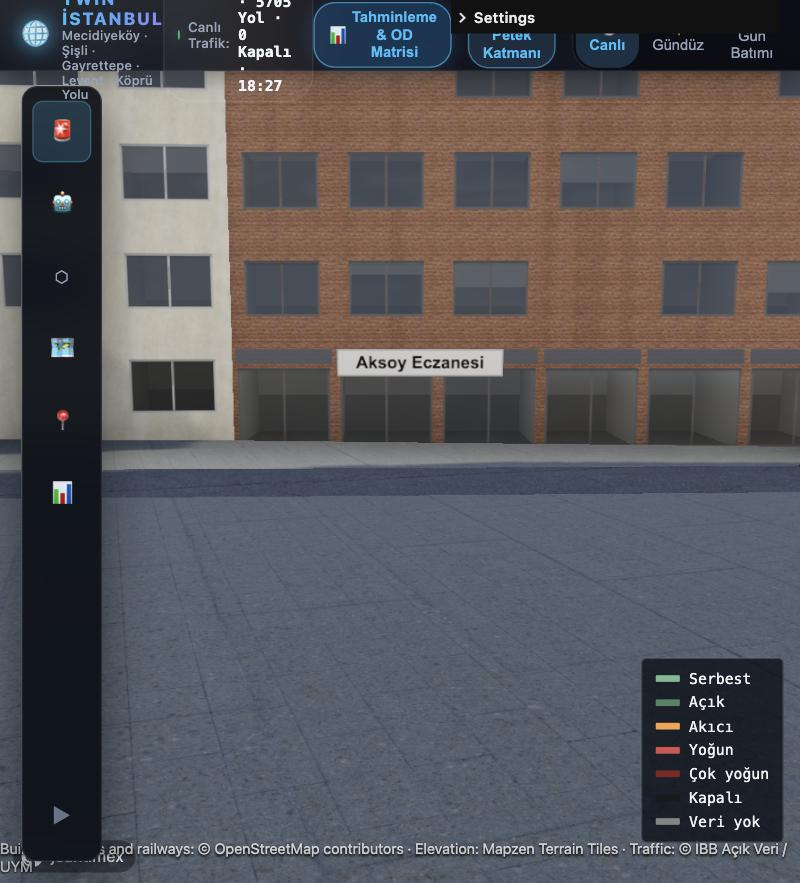

Simülatör yolculuk ister, sensör hız verirA simulator needs trips; sensors deliver speeds
SUMO gibi bir trafik simülatörü, kimin nereden nereye gittiğini söyleyen bir başlangıç–varış (O-D) matrisi ister. İBB'nin canlı akışı ise her yol kesimi için yalnızca hız ve sıkışıklık sınıfı verir. 9.025 bilinmeyene karşı birkaç yüz gözlem var: veri tek başına matrisi belirleyemez. A traffic simulator such as SUMO needs an origin–destination (OD) matrix: who travels from where to where. İBB's live feed gives each road segment only a speed and a congestion class. A few hundred observations face 9,025 unknowns: the data alone cannot determine the matrix.
Hız ≠ sayımSpeed ≠ count
Serbest akıştaki bir yol 0 ile kapasite arasında herhangi bir akımı taşıyabilir. Hızı sahte sayıma çevirmek, verinin taşımadığı bir kesinlik uydurur.A road at free flow can carry any flow between zero and capacity. Turning speed into a pseudo-count invents a precision the data does not carry.
Ne kadarı veri?How much is data?
Çoğu çalışma, tahminin ne kadarının veriden, ne kadarının varsayımdan geldiğini söylemez. Bu proje bunu her O-D çifti ve toplam talep düzeyi için ölçer.Most studies do not say how much of an estimate comes from data and how much from assumptions. This project measures it for every OD pair and for the total level of demand.
Dürüst doğrulamaHonest validation
Uydurulan sayımlarda iyi uyum hiçbir şey kanıtlamaz. GEH, her sayım tek tek dışarıda bırakılarak, modelin görmediği veride ölçülür.A good fit to the counts it was fitted on proves nothing. GEH is measured on each count left out in turn: on data the model has not seen.
Hız, sansürlü bir gözlemdirA speed is a censored observation
Üçgen temel diyagramda serbest akış hızı yalnızca bir üst sınır verir; sıkışık daldaki hız ise geçen akımı ve kuyruk olduğu için talep hakkında bir alt sınırı verir. Hızı değiştirip deneyin. On the triangular fundamental diagram a free-flow speed gives only an upper bound; a speed on the congested branch gives the flow getting through, and since there is a queue, a lower bound on demand. Move the speed and see.
Tahminci: bilevel MAPThe estimator: bilevel MAP
Sayımlar iki taraflı, hız sınırları tek taraflı kare cezalarla girer; verinin sessiz kaldığı yerde tahmin, göreli belirsizlikli bir prior'a yakın tutulur. Rota seçimi talebe bağlı olduğu için kullanıcı dengesi ataması ve tahmin dönüşümlü çalışır, ardışık ortalamalarla sönümlenir.Counts enter as two-sided, speed bounds as one-sided squared penalties; where the data is silent the estimate stays near a prior with relative uncertainty. Route choice depends on demand, so user-equilibrium assignment and estimation alternate, damped by successive averages.
xij = x0,ij · eg + ai + bj + uij
a, b: zonun üretim ve çekim çarpanları; g: tüm matrisin düzeyi. Laplace yaklaşımı ve Woodbury özdeşliğiyle her O-D çifti için standart hata ve veri payı; profil eğriliğiyle düzeyin tanımlanabilirliği.a, b: a zone's production and attraction factors; g: the level of the whole matrix. A Laplace approximation with the Woodbury identity gives every OD pair a standard error and a data share; the profile curvature tells whether the level is identified.
Talep düzeyi sayımlarla sabitlendiThe level of demand is anchored by counts
Tüm matrisin düzeyi tek bir çarpanla taşınır ve sayımların onu ne kadar sabitlediği ölçülür. Pazartesi 11:30'daki canlı hızlar ve 23 İBB sayımıyla: arazi kullanımından kurulan prior, talebi yaklaşık üç kat yüksek gösteriyormuş. The level of the whole matrix is one factor, and how far the counts pin it down is measured. With live speeds on Monday at 11:30 and 23 İBB counts: the land-use prior overstated demand roughly threefold.
Neden önemli?Why it matters
Sayımsız tahmin SUMO'da ağı kilitlemişti: 192.551 aracın yalnızca 102.735'i girebildi, medyan hız 2,9 km/sa'e düştü. Kilitlenmenin kaynağı buydu: talep düzeyi veriden değil, varsayımdan geliyordu.The estimate without counts had gridlocked the network in SUMO: only 102,735 of 192,551 vehicles could enter, median speed 2.9 km/h. That was the cause: the level of demand came from assumptions, not data.
Ölçüt, "sayım verildi, düzey sabittir" demez. Sentetik testte tek bir kesit sayımı, zon çarpanları serbestken düzeyin ancak yarısını belirliyor; çünkü sayım, kestiği zonları büyüterek de karşılanabiliyor.The measure does not assume "counts were given, so the level is fixed". In the synthetic test a single screenline, with free zone factors, determines only half of the level, because the count can also be met by inflating the zones it crosses.
Beş düzeltme turu, dışarıda bırakılan sayımlardaFive correction rounds, on held-out counts
Dışarıda bırakılan ortalama GEH 35,6'dan 23,2'ye indi. GEH < 5 ölçütü (%85) henüz karşılanmıyor: düzey doğru, talebin zonlar arasındaki dağılımı zayıf. Bunu saklamıyoruz.The held-out mean GEH fell from 35.6 to 23.2. The GEH < 5 criterion (85 %) is not met yet: the level is right, the spread of demand across zones is weak. We do not hide it.
Çok kaynaklı çapalar ve sinir ağı denetçisiMulti-source anchors and a neural auditor
Çok kaynaklı çapalarMulti-source anchorsuygulandıdone
Bir çapa linki değil, doğrudan bir O-D toplamını kısıtlar: köprünün bir yönü ya da bir zon grubunun ürettiği yolculuklar. İstanbulkart verisinde koridordaki 31 raylı sistem ve metrobüs durağında 11:00–12:00'de 11.764 biniş var.An anchor constrains a sum over the OD matrix, not a link: one direction of the bridge, or the trips a group of zones produces. İstanbulkart data show 11,764 boardings between 11:00 and 12:00 at 31 rail and Metrobüs stops in the corridor.
Sayımlar koridor zonlarının üretimini 57,4 binden 15,6 bine indirmişti; tamamen bağımsız İstanbulkart çapası bununla tutarlı.The counts had cut the corridor zones' production from 57.4 k to 15.6 k; the fully independent İstanbulkart anchor agrees.
Simülasyondan gerçeğe sinir ağıSimulation-to-reality networkilk sürümfirst version
300 simüle örnekle (O-D → 712 linkte hız) eğitilen bir ağ, canlı hızdan talebi anlık okumayı hedefler; MAP tahmincisi onun denetçisidir. İlk sürüm denetimden geçemedi ve sistem bunu kendiliğinden işaretledi:A network trained on 300 simulated samples (OD → speeds on 712 links) aims to read demand from live speeds instantly; the MAP estimator is its auditor. The first version failed the audit, and the system flagged it on its own:
Statik model gerçek yavaşlamayı üretmiyor (hız oranı medyanı gerçekte 0,32, modelde 0,99). Ağ MAP'in 4,8 katını verdi; denetçi: güvenilmez. Sırada SUMO'dan üretilen örnekler var.The static model does not produce real slowdowns (median speed ratio 0.32 in reality, 0.99 in the model). The network gave 4.8 times the MAP estimate; auditor: untrustworthy. Next: samples generated by SUMO.
Kaza anında: geleceği çatallayıp yarıştırAt an incident: fork the future and race it
SUMO olay anında tüm durumu (her araç, kuyruk ve rota) kaydeder; aynı durumdan her müdahale politikası ayrı ayrı ve gerçek zamandan hızlı koşturulur. Kararı simülasyon verir; bir dil modeli kullanılırsa yalnızca sonucu anlatır. İlk sınama: 5 şeritli TEM (2. Çevre Yolu) kesimi 20. dakikada kapanıyor, 20 dakika ileri. At the incident SUMO saves its whole state (every vehicle, queue and route); from that same state each response policy is run separately and faster than real time. The simulation decides; a language model, if used, only tells the result. First test: a five-lane stretch of the TEM motorway closes at minute 20, simulated 20 minutes ahead.
Açık veriden prosedürel İstanbulA procedural Istanbul from open data
Yaklaşık 38.000 bina, 1.170 km yol ve 60 köprü tabliyesi OpenStreetMap ve yükseklik verisinden karolara derlenir ve tarayıcıda gerçek zamanlı çalışır. Yollar İBB'nin canlı sıkışıklık sınıfıyla renklenir. Kiremit çatılar, gerçek dükkân adlı tabelalar, viyadükler ve asma köprü İstanbul'a özgü üretilir. About 38,000 buildings, 1,170 km of roads and 60 bridge decks are compiled from OpenStreetMap and elevation data into tiles and run in real time in the browser. Roads are coloured by İBB's live congestion class. Tiled roofs, shop signs with real names, viaducts and the suspension bridge are generated for Istanbul.






Açık veriden karara dört katmanFour layers from open data to decisions
Açık veriOpen data
- OpenStreetMap, SRTM
- İBB canlı hız (5 dk arşiv)İBB live speeds (5-min archive)
- 27 sayım sensörü27 count sensors
- İstanbulkart, 2020 modeli, 2012 anketiİstanbulkart, 2020 model, 2012 survey
Ön işlemePre-processing
- netconvert ile SUMO ağıSUMO network with netconvert
- Yön kontrollü segment eşlemeDirection-checked segment matching
- Yola dik sayım kesitleriScreenlines across the road
- H3 zonları ve geçitlerH3 zones and gateways
TahminEstimation
- Sansürlü gözlemlerCensored observations
- Bilevel MAP + UEBilevel MAP + UE
- Veri payı, düzey, çapalarData share, level, anchors
- Sinir ağı + denetçiNeural net + auditor
Sınama ve kullanımTesting and use
- Dışarıda bırakılan GEHHeld-out GEH
- SUMO dinamik koşuSUMO dynamic run
- Gölge simülasyonShadow simulation
- Tarayıcıda 3D ikiz3D twin in the browser
Neyin çalıştığını, neyin çalışmadığını açıkça söylüyoruzWe say plainly what works and what does not
| BileşenComponent | DurumStatus | NotNote |
|---|---|---|
| Sansürlü gözlem tahmincisiCensored-observation estimator | çalışıyorworking | 34 sentetik kontrol geçiyor34 synthetic checks pass |
| Talep düzeyiDemand level | sabitlendianchored | veri payı 0,81data share 0.81 |
| Zonlar arası dağılımSpread across zones | zayıfweak | dışarıda bırakılan GEH < 5: %8,7 (hedef %85)held-out GEH < 5: 8.7 % (target 85 %) |
| Sensör tanımlarıSensor definitions | teyit gereklito confirm | O-2 ve FSM sensörlerinin yönü ve şerit kapsamıdirection and lane coverage of O-2 and FSM sensors |
| SUMO dinamik koşuSUMO dynamic run | yerel kilitlenmelocal gridlock | zon girişleri yayılmalızone entries need spreading |
| Sinir ağı ters çözücüNeural inverse solver | denetimden geçmedifailed the audit | SUMO örnekleri gereklineeds SUMO samples |
| Uygulamadaki analitik panellerAnalytics panels in the app | gösterim amaçlıillustrative | henüz veriden hesaplanmıyornot yet computed from data |
Her şey yeniden üretilebilirEverything is reproducible
# 3D istemci / 3D client npm install npm run fetch -- --area=koridor npm run compile -- --area=koridor npm run dev # localhost:5280/?area=koridor
# ulaşım modeli / transport model
npm run sumo:net -- --area=koridor
npm run sumo:map-ibb -- --area=koridor
npm run od:corridor -- --area=koridor
uv run --group sumo python tools/sumo/shadow.py --narrate